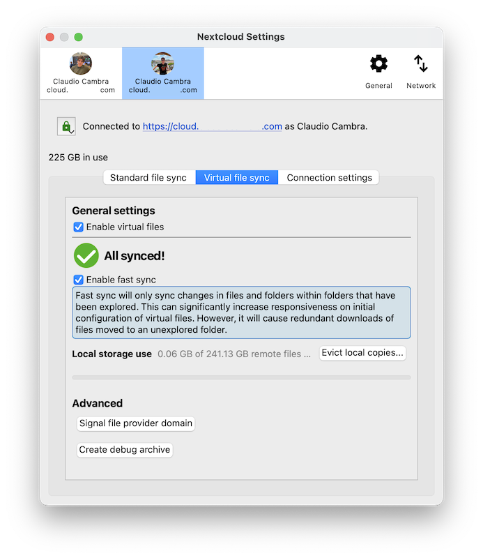

macOS 가상 파일 클라이언트
Nextcloud 데스크톱 사용자를 위한 가상 파일 기반 동기화를 이제 macOS에서 사용할 수 있습니다.
윈도우즈와 달리 macOS에서의 가상 파일 지원은 별도 클라이언트 버전으로 제공됩니다. 이것은 동기화 상태 통합과 컨텍스트 메뉴 동작을 포함하여 클래식하게 동기화된 파일의 기존 동기화 동작을 사용하기를 원하는 사용자에게 최적의 경험을 가능하게 합니다. 클래식 동기화 클라이언트와 같이 macOS 가상 파일 클라이언트는 윈도우즈와 리눅스 용 데스크톱 클라이언트와 같이 릴리즈되고 사용자 경험을 개선하는 정기적 버그 수정과 기능 업데이트의 이점을 가질 수 있습니다.
지원되는 기능
파일 별 로컬 보존과 제거
지능적인 로컬 복사 제거
Spotlight와 통합
가상 파일에 대하여 Finder 안에서 파일 미리보기
앱 번들과 iWork (Pages, Numbers, Keynote) 번들과 같은 애플 특화 형식 지원
원격 파일 잠금 호환성
“로컬에서 편집” 지원
다른 사용자와 파일 공유
원격 변경에 대한 자동 동기화
이외 더 많은 기능!
참고
원격 변경 감지를 개선하기 위해서, Nextcloud 서버의 notify_push 앱 활성화를 권장합니다. 이 앱은 서버의 변경이 발생하자마자 데스크톱 클라이언트에 변경을 알려서 클라이언트가 변경을 감지하는데 걸리는 시간을 줄입니다. 이것은 또한 데스크톱 클라이언트가 변경을 감지하기 위해 서버를 주기적으로 요청하는 것 또한 제거합니다.
설치와 초기 설정
가상 파일 클라이언트는 macOS 클래식 동기화 클라이언트와 유사하게 인스톨러 패키지로 배포됩니다. 데스크톱 클라이언트는 인스톨러에 제공되는 다음 단계를 걸쳐 설치될 수 있습니다.
가상 파일 데스크톱 클라이언트는 클래식 동기화 데스크톱 클라이언트와 상호 호환됩니다. 이것은 기존 계정과 설정을 이 클라이언트로 이전할 수 있고 이전 클래식 동기화 클라이언트로 돌아가려고 할 때 반대로 이전 가능합니다. 가상 파일 클라이언트는 클래식 동기화 또한 지원하므로 기존 표준 동기화 폴더도 포함됩니다.
참고
macOS의 기술적 제한으로 인하여 Finder 상에서 통합을 클래식 동기화 폴더와 가상 파일 동기화 폴더를 동시에 제공할 수 없습니다. 가상 파일 클라이언트의 클래식 동기화 폴더는 그래서 동기화 상태 아이콘이나 컨텍스트 메뉴 동작과 같은 Finder 통합을 지원하지 않습니다.
기존 혹은 새로 구성된 계정은 가상 파일이 자동적으로 활성화됩니다. macOS 상에서 각 계정의 가상 파일은 각자 도메인하래에 위치하고 기존 클래식 동기화 폴더와 구분됩니다. 이런 도메인은 Finder 사이드바의 “위치” 그룹에서 찾을 수 있습니다.

이런 도메인 중 하나를 처음 접근할 때, 데스크톱 클라이언트는 서버로 부터 가상 파일의 정보를 요청하게 됩니다. 이 첫 동기화는 서버에 호스트되는 파일의 수에 따라서 시간이 걸릴 수 있습니다.
Finder 통합
가상 파일 클라이언트는 클래식 동기화 클라이언트보다 macOS 파일 브라우저와 더 깊고 자연스럽게 통합되는 차별화된 Finder 통합을 가집니다.
동기화 상태 표시기
클래식 동기화 클라이언트와 유사하게 가상 파일 클라이언트는 가상 파일 옆에 상태를 표시하는 아이콘을 표시합니다.
클라우드에 화살표 표시: 항목 혹은 하위 항목이 가상이고 로컬 보관 가능합니다
클라우드 outline: 항목이 일부 로컬에서 사용가능합니다
아이콘 없음: 항목이 오프라인에서 사용가능합니다
컨텍스트 메뉴 동작
Finder 항목에서 Control-클릭, 두 손가락 클릭, 혹은 오른쪽 클릭은 가상 파일 클라이언트에서 제공하는 여러 항목을 찾을 수 있는 컨텍스트 메뉴를 제공하고, 이것은 Nextcloud 기능의 일부를 사용할 수 있게 합니다. 다음 기능을 포함합니다:
파일 잠그기 (서버에서 제공되는 경우)

파일 공유 (서버에서 제공되는 경우)

설정
가상 파일 관련 설정은 Nextcloud 데스크톱 클라이언트 설정 창을 통하여 계정 별로 조정할 수 있습니다.
가상 파일 섹션은 가상 파일 상호작용과 관련된 여러 옵션을 제공합니다:
대상 계정에 대한 가상 파일 활성화/비활성화
빠른 동기화 활성화/비활성화
로컬 저장소 사용량 관리와 로컬 사본 제거
가상 파일 도메인에 대하여 강제 업데이트 검사